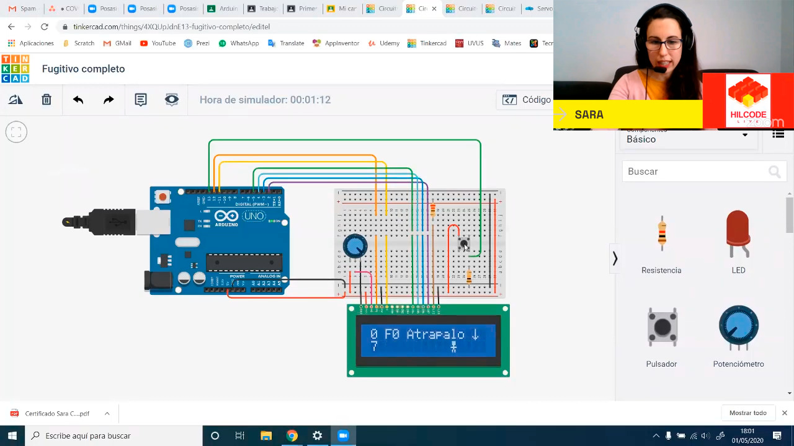

Introducción
Esta guía nace como fruto de nuestra experiencia formando a profesorado y docentes de distintos centros educativos. Ofrecemos una recopilación de recursos, plataformas y actividades para fomentar el pensamiento crítico y computacional, diseñadas para que podáis integrarlas fácilmente en vuestro contexto educativo.
Herramientas Metodológicas
Pair Programming
Programación por parejas. Dos alumnos por ordenador utilizando juego de roles:
- Conductor: El único que puede tocar teclado y ratón. Debe actuar en consenso.
- Copiloto: Se encarga de pensar la mejor manera de resolver retos y depurar errores.
Regla de oro: No somos mandones. Usamos palabras respetuosas como "Creo que...", "En mi opinión...".
Actividades Desconectadas
También llamadas actividades "Unplugged". Son juegos de lógica, cartas, uso de cuerdas y movimientos físicos diseñados para representar y comprender conceptos informáticos (como algoritmos, bucles o transmisión de datos) sin necesidad de usar pantallas ni ordenadores.
01. Scratch
Programación creativa y pensamiento crítico. A través de bloques de colores, los alumnos pueden crear animaciones, historias interactivas y juegos sin necesidad de saber código tradicional.

Temario y Proyectos
Conceptos de Programación
- Algoritmos y depuración (Debugging)
- Tipos de datos, variables y listas
- Sensores y datos de entrada
- Control de flujo (Bucles, Condicionales)
- Operadores (Aritméticos, lógicos)
Diseño de Videojuegos
- Animaciones, sprites y disfraces
- Sonidos y diálogos
- Movimiento, coordenadas 2D y colisiones
- Marcadores y temporizadores
- Cambios de pantalla (Menús, Game Over)
Plantillas de Proyectos Destacados
Guías y Documentación
Recursos para profes
Documento de recursos prácticos y consejos para educadores y profesores.
Abrir documentoGuía docente 3.0
Guía completa paso a paso sobre el entorno y sus herramientas principales.
Abrir guíaActividades AACC
Memoria de actividades específicas para trabajar con alumnado de Altas Capacidades.
Abrir memoriaTarjetas de Harvard
Guía oficial de Creative Computing con tarjetas de actividades de Scratch.
Descargar PDFTalleres Temáticos y Bloques IA
Inteligencia Artificial con bloques
Actividades para entender cómo funciona la inteligencia artificial, cómo toma decisiones y la importancia de los datos.
02. Minecraft
Minecraft es un entorno donde los alumnos pueden experimentar con lógica, diseño y pensamiento computacional. Utilizamos Minecraft Education Edition para trabajar electrónica digital y circuitos lógicos visuales.

Curso de Electrónica Digital
Accede al temario completo, a los retos de programación y reproduce los videotutoriales paso a paso de redstone y circuitos.
Acceder al Curso Interactivo03. Tinkercad

Diseño 3D simplificado y Simulación
Plataforma online gratuita que permite a jóvenes iniciarse en el diseño 3D de forma sencilla. Basada en figuras geométricas, pueden crear desde objetos simples hasta modelos para impresión 3D, y simular circuitos con Arduino.
Proyecto del curso:
Diseño completo de un Soporte para móviles y programación de placas.
04. MakeCode Arcade
Crea tus propios videojuegos retro
Plataforma online de Microsoft para programar videojuegos tipo arcade de 8 bits. Diseña personajes, niveles, lógica de juego ¡y juega a tus propias creaciones con bloques, JavaScript o Python!

05. Roblox Studio

Crea juegos 3D y aprende a programar
Permite a los jóvenes crear sus propios videojuegos 3D interactivos utilizando programación con el lenguaje Lua, pasando de jugadores a creadores.
06. Robótica Educativa
Construcción y programación de robots físicos interactuando con el mundo real, adaptados según la etapa educativa.
Lego WEDO 2.0
PrimariaContenidos
- • Mecanismos: Engranajes, poleas, ejes.
- • Electrónica: Sensores, LEDs, motores, HUB.
- • Programación en interfaz WEDO 2.0
- • Conexión del robot a Scratch
Proyectos iniciales
Robots mBot
SecundariaElectrónica (Basada en Arduino)
- • Entradas: IR, ultrasonidos, módulos.
- • Salidas: LED RGB, Buzzer (Zumbador).
- • Señales digitales y analógicas
Programación (mBlock)
- • Interfaz mBlock y conexión de placa.
- • Lectura y comprobación de entradas.
- • Lógica de motores: Robot en movimiento.
07. Placas y Circuitos

Micro:bit
Pequeña placa programable para aprender programación, electrónica y sensores de forma práctica. Cuenta con matriz de luces LED, botones y conexión Bluetooth para crear brújulas, alarmas o termómetros.
Makey Makey
Convierte casi cualquier objeto conductor (como frutas, plastilina o grafito) en un botón o tecla. Fantástico para introducir conceptos básicos de electrónica (circuito cerrado/abierto) de forma lúdica.
Explorar todos los retos
Proyecto Destacado: Guitar Hero
Construcción física Plantilla Scratch (vacía) Proyecto Scratch simplificadoMás Experimentos
App Alarma (Cadena humana) ¿Qué materiales son conductores? Encender un LED App Piano Interactivo Circuito con lápiz Botones de concurso08. Bee-Bot


Iniciación al pensamiento lógico (4-6 años)
Robot educativo con forma de abeja. Ideal para trabajar secuenciación, resolución de problemas, orientación espacial y ensayo/error de forma manipulativa y sin pantallas.
1. Primeros pasos
Programar recorridos simples (ir de un punto a otro) sobre una cuadrícula.
Actividad guiada2. Encuentra el tesoro
Llegar al objetivo evitando obstáculos o buscando el camino más corto.
Actividad práctica3. Historias con Bee-Bot
Crear escenarios y contar historias en cada desplazamiento.
Actividad creativa4. Matemáticas
Usar números en la cuadrícula para resolver sumas, restas y secuencias.
Lógica matemática5. Retos de lógica
Planificar la secuencia obligando a pasar por ciertos puntos antes del destino.
DesafíosOpciones Digitales
Si no dispones del robot físico, puedes usar los simuladores (Busca "Bee-Bot App" en tu móvil o abre el entorno web).
Blue-Bot Online